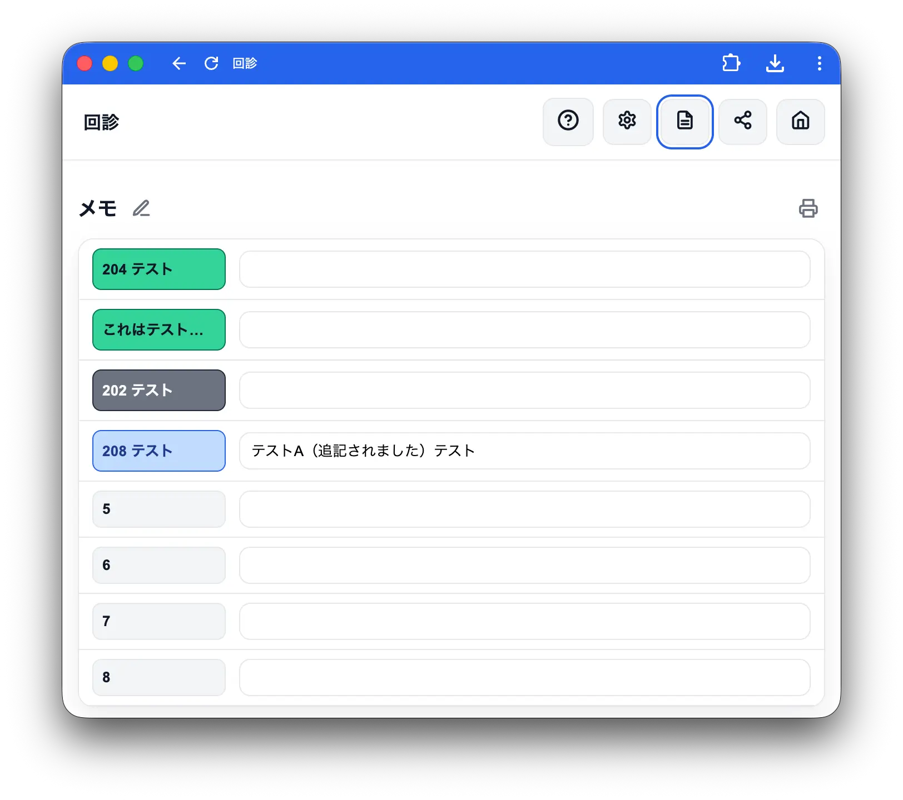
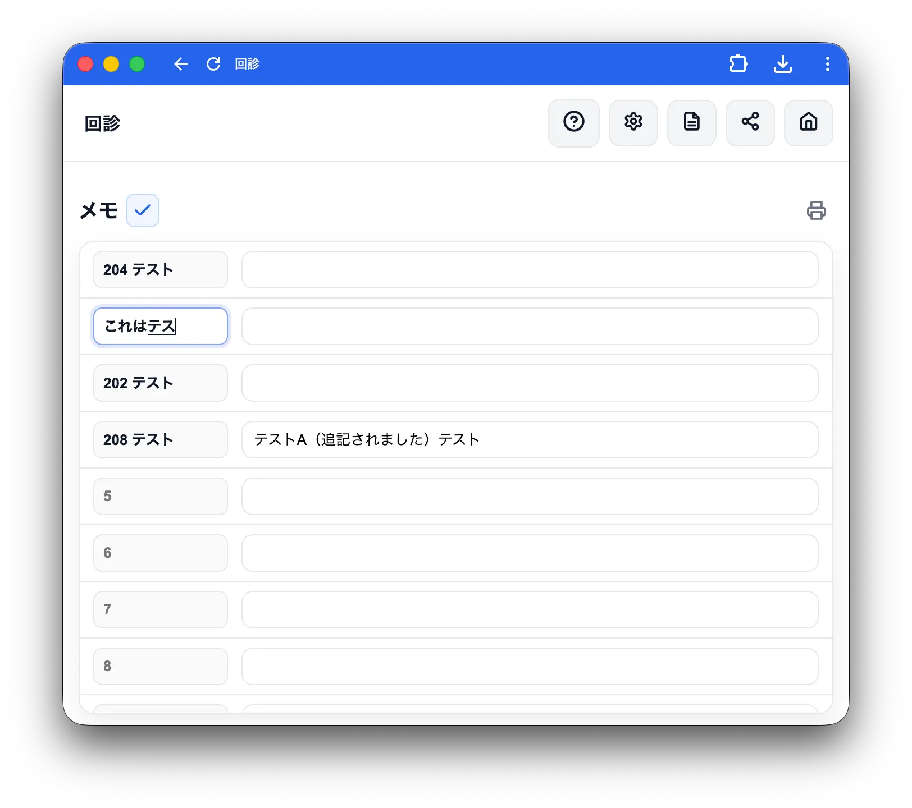
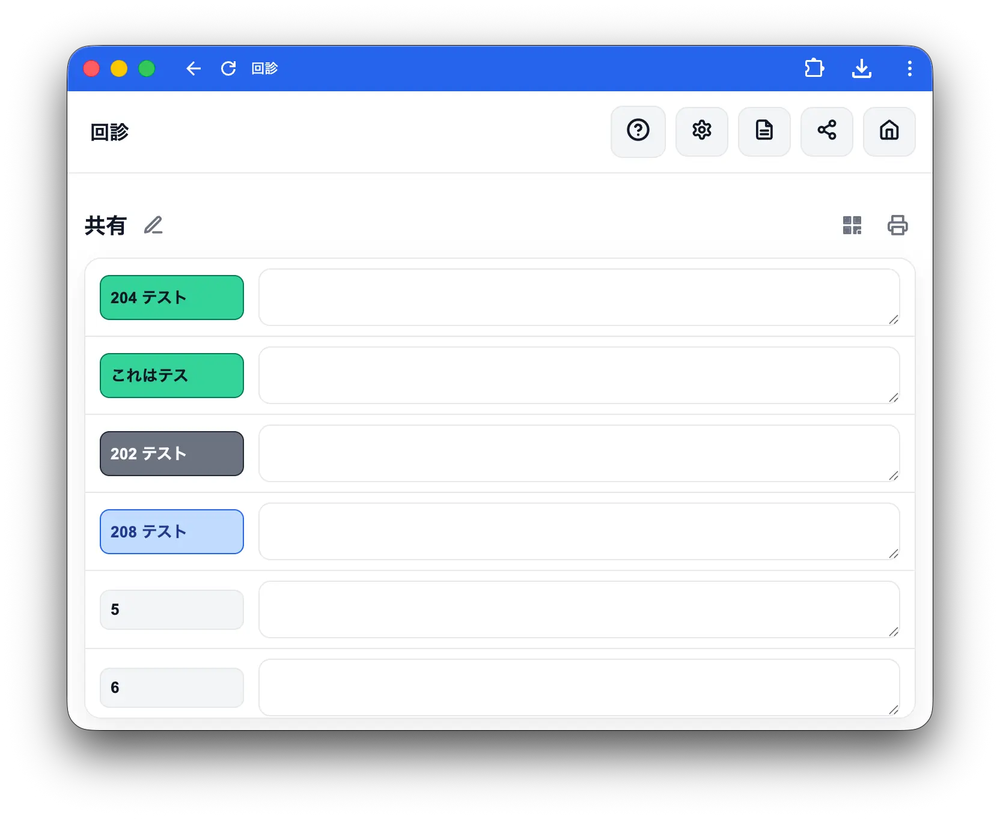
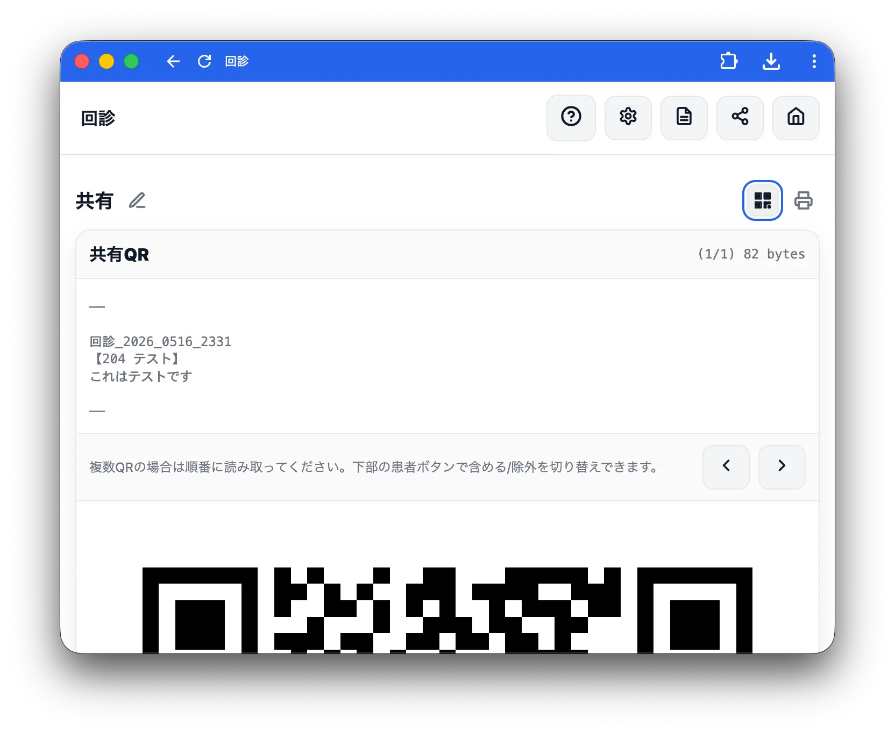

メモ・共有
メモ

ヘッダーのノートアイコン（メモ）で開きます。全患者のメモを一覧で確認できます。
患者名をタップ
患者名をタップすると、その患者の患者画面に移動します。ホーム画面と同様に長押しで並び替え・削除ができます。ボタンの色はホーム画面と同じステータス色で表示されます。
編集モード

右上の鉛筆アイコンをタップすると編集モードになり、一覧上で直接メモを編集できます。チェックアイコンをタップして編集を終了します。
印刷
プリンターアイコンをタップすると現在表示されているメモを印刷できます。
共有

ヘッダーのシェアアイコン（共有）で開きます。全患者の「共有」欄の内容を一覧で確認できます。
QR表示

QRコードアイコンをタップすると、共有データをQRコードとして表示します。他端末で読み取ることでデータを引き継げます（データ量が多い場合は複数QRに分割されます）。
受信メモ
クリップボードアイコンをタップすると受信メモ欄が開き、他端末のQRコードを読み取ったテキストを貼り付けて内容を確認できます（初期状態は折りたたまれています）。開いているときはアイコンが青くハイライト表示されます。テキストにはタイトルとタイムスタンプが含まれます。複数人で運用する場合は、アプリタイトルに担当者名や場所を入れておくと送信元が分かりやすくなります。
編集モード・印刷
メモ一覧と同様に、編集モード（直接編集・並び替え・患者画面への移動）やプリンターアイコンによる印刷が利用できます。